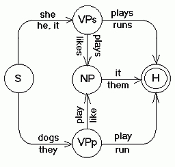

|  |
Computational Linguistics 1CMSC/LING 723; LBSC 774Fall 2011Class time: Tue/Thu 2:00 - 3:15pm 1 Sept - 19 Dec, 2011 Class location: CSI 2107 Instructor: Kristy Hollingshead Seitz
TA: Aleksandrs Ecins
Homework submission email: moc.liamg@1102llaf.327gnilpmoc Course mailing list webpage: groups.google.com/group/umd-cmsc723-fall-2011 (umd-cmsc723-fall-2011@googlegroups.com) |
||||||||||||
|
News |
Items of note will be posted in this section. 11/14: HW5's deadline has been extended to Nov 17, with an option to receive extra credit if turned in on the original deadline of Nov 15. 11/4: HW5 is now available and is due Nov 15. 10/27: HW4 is now available. 10/25: HW4 will be due Nov 3. 10/18: Class will be cancelled next Thursday, Oct 27. 10/11: The midterm will now be given as a take-home midterm, handed out on Tuesday Oct 18, due back the next Tuesday, Oct 25. 9/29: HW3 is now available and is due Oct 13. 9/22: HW2 is now available and is due Sept 29. 9/9: HW1 is now available and now due on Sept 20. 9/1: HW0 is now available; Jimmy Lin's Python tutorial was added to the schedule page for today. 8/26: The course schedule is up! 8/20: First day of class is Thursday, September 1! |
||||||||||||
|
Schedule |
The schedule of lectures, readings, and homeworks can be found here. | ||||||||||||
|
Course Description |
This is the first semester in our two-semester graduate sequence in computational linguistics. During this semester, we will focus on fundamental methods, algorithms, and data structures in natural language processing. Topics include: finite-state methods, context-free and extended context-free models of syntax; parsing and semantic interpretation; n-gram and Hidden Markov models, part-of-speech tagging; and natural language applications. Students completing this course will have a solid working knowledge of the basics of NLP and will be well prepared for the second semester course, which covers natural language processing with a focus on corpus-based statistical techniques. This class fulfills the AI Area of the Computer Science MS Comps requirements. Prerequisites: There will be a fair amount of programming required to complete the homeworks for this course, and therefore some programming experience is assumed. There is no official programming language for this course, but I strongly recommend using Python and the NLTK toolkit -- particularly if you are planning to continue on to Computational Linguistics 2 next semester -- unless you have a strong preference otherwise. You are expected to have a computer on which you can complete the homework assignments. |
||||||||||||
|
Textbook(s) |
The textbook for the course is: Approximately one third of the course readings will be conference papers and journal articles, which will be accessible online. |
||||||||||||
|
Grading |
The purpose of grading, for this class, is to provide a quantitative measurement of your progress and understanding in the class, as well as a measurement of how well the class is doing as a whole.
Please note: the CS MS Comp grade (AI Area) will be based entirely on the average of the midterm and final exam grades. |
||||||||||||
|
Policies |
Attendance
Homeworks
Late and Incomplete Work
Exams
Students with Disabilities
Class Cancellations
|
||||||||||||
|
Page modified 11 October 2011. |